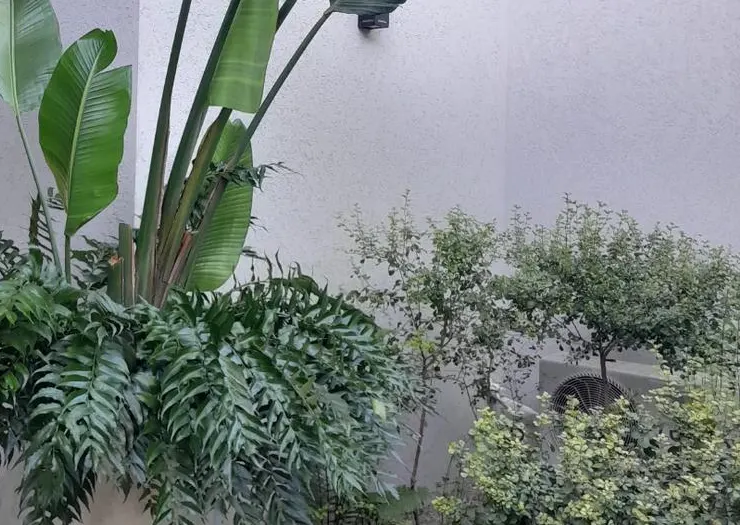
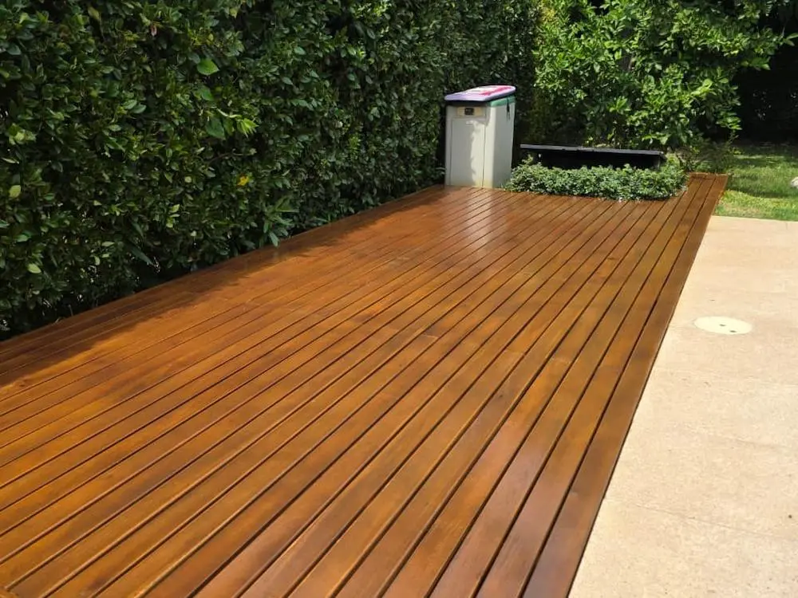
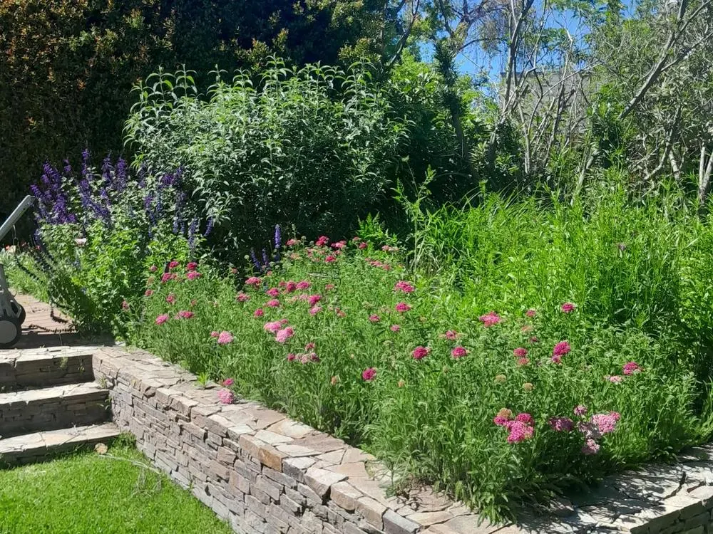

Qué cambia cuando se decide con criterio
Lo que se planta, se elige para ese lugar
Cada tipo de suelo y cada clima define las especies antes de plantar, pensando en cómo va a crecer el jardín con el paso del tiempo y en para qué lo querés usar.
Sabés por qué le pasa lo que le pasa a tu jardín
Detrás de cada decisión hay formación en paisajismo y en biología botánica: entender por qué una planta florece o no es lo que permite decidir bien desde el principio.
Un mismo equipo, del diseño a la obra
El que diseña es el que ejecuta, incluida la parte que no es vegetal: riego, canteros, decks y obras civiles. Lo que se diseñó es lo que se construye.
Sabés cuánto vas a pagar
Las visitas para armar el presupuesto no se cobran, y el valor que te pasamos es el valor final: no aparecen adicionales después.
Cómo trabajamos
Primera visita
Conocemos el espacio y a quien lo habita, y relevamos lo que se quiere hacer ahí.
Segunda visita, si hace falta
Más detallada: mediciones, riego, drenaje y el comportamiento del suelo y del sol. Sin cargo.
Propuesta
El proyecto, en función de lo que necesita el espacio y del objetivo que tenés para él.
Lo que dicen quienes ya trabajaron con nosotros
[Testimonios de clientes — pendientes de autorización para publicar.]
Este espacio queda reservado para testimonios reales. No se completa con textos de ejemplo.


